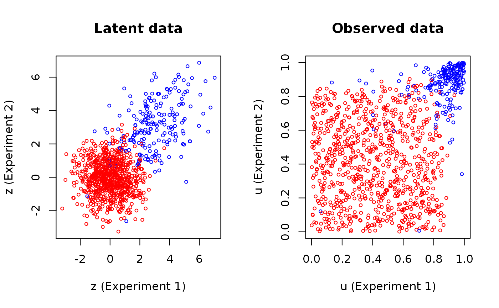

An fast and modified implementation of the Li et. al. (2011) EM-like algorithm for estimating the maximizing parameters of the GMCM-likelihood function.
PseudoEMAlgorithm(x, theta, eps = 1e-04, max.ite = 1000, verbose = FALSE, trace.theta = FALSE, meta.special.case = FALSE, convergence.criterion = c("absGMCM", "GMCM", "GMM", "Li", "absLi"))
| x | A matrix of observations where rows corresponds to features and columns to experiments. |
|---|---|
| theta | A list of parameters formatted as described in
|
| eps | The maximum difference required to achieve convergence. |
| max.ite | The maximum number of iterations. |
| verbose | Logical. Set to |
| trace.theta | Logical. If |
| meta.special.case | Logical. If |
| convergence.criterion | Character. Sets the convergence criterion. If
|
A list of 3 or 4 is returned depending on the value of
trace.theta
A list containing the final parameter
estimate in the format of rtheta
A matrix with different log-likelihood traces in each row.
A matrix
where the (i,j)'th entry is the probability that x[i, ] belongs to
the j'th component. Usually the returned value of EStep.
A list of each obtained parameter estimates in the format of
rtheta
When either "absGMCM" or "absLi" are used, the parameters
corresponding to the biggest observed likelihood is returned. This is not
necessarily the last iteration.
The algorithm is highly sensitive to the starting parameters which therefore should be carefully chosen.
Li, Q., Brown, J. B. J. B., Huang, H., & Bickel, P. J. (2011). Measuring reproducibility of high-throughput experiments. The Annals of Applied Statistics, 5(3), 1752-1779. doi:10.1214/11-AOAS466
Anders Ellern Bilgrau <anders.ellern.bilgrau@gmail.com>
set.seed(1) # Choosing the true parameters and simulating data true.par <- c(0.8, 3, 1.5, 0.4) data <- SimulateGMCMData(n = 1000, par = true.par, d = 2) uhat <- Uhat(data$u) # Observed ranks # Plot of latent and observed data colour coded by the true component par(mfrow = c(1,2)) plot(data$z, main = "Latent data", cex = 0.6, xlab = "z (Experiment 1)", ylab = "z (Experiment 2)", col = c("red","blue")[data$K]) plot(uhat, main = "Observed data", cex = 0.6, xlab = "u (Experiment 1)", ylab = "u (Experiment 2)", col = c("red","blue")[data$K])# Fit the model using the Pseudo EM algorithm init.par <- c(0.5, 1, 1, 0.5) res <- GMCM:::PseudoEMAlgorithm(uhat, meta2full(init.par, d = 2), verbose = TRUE, convergence.criterion = "absGMCM", eps = 1e-4, trace.theta = FALSE, meta.special.case = TRUE)#> 2 | delta = 17.868577 | gmm = -2885.75 | gmcm = 167.34 #> 3 | delta = 8.082063 | gmm = -2907.74 | gmcm = 175.42 #> 4 | delta = 6.050655 | gmm = -2927.31 | gmcm = 181.47 #> 5 | delta = 5.348391 | gmm = -2945.36 | gmcm = 186.82 #> 6 | delta = 4.839607 | gmm = -2962.35 | gmcm = 191.66 #> 7 | delta = 4.347890 | gmm = -2978.45 | gmcm = 196.00 #> 8 | delta = 3.874041 | gmm = -2993.69 | gmcm = 199.88 #> 9 | delta = 3.435810 | gmm = -3008.08 | gmcm = 203.31 #> 10 | delta = 3.052414 | gmm = -3021.64 | gmcm = 206.37 #> 11 | delta = 2.721477 | gmm = -3034.39 | gmcm = 209.09 #> 12 | delta = 2.443531 | gmm = -3046.37 | gmcm = 211.53 #> 13 | delta = 2.211751 | gmm = -3057.62 | gmcm = 213.74 #> 14 | delta = 2.015994 | gmm = -3068.18 | gmcm = 215.76 #> 15 | delta = 1.853092 | gmm = -3078.07 | gmcm = 217.61 #> 16 | delta = 1.715827 | gmm = -3087.35 | gmcm = 219.33 #> 17 | delta = 1.599870 | gmm = -3096.02 | gmcm = 220.93 #> 18 | delta = 1.500794 | gmm = -3104.13 | gmcm = 222.43 #> 19 | delta = 1.416708 | gmm = -3111.69 | gmcm = 223.85 #> 20 | delta = 1.344361 | gmm = -3118.72 | gmcm = 225.19 #> 21 | delta = 1.282530 | gmm = -3125.24 | gmcm = 226.47 #> 22 | delta = 1.228756 | gmm = -3131.26 | gmcm = 227.70 #> 23 | delta = 1.181350 | gmm = -3136.79 | gmcm = 228.88 #> 24 | delta = 1.139250 | gmm = -3141.84 | gmcm = 230.02 #> 25 | delta = 1.100991 | gmm = -3146.39 | gmcm = 231.12 #> 26 | delta = 1.063712 | gmm = -3150.46 | gmcm = 232.19 #> 27 | delta = 1.026408 | gmm = -3154.02 | gmcm = 233.21 #> 28 | delta = 0.987403 | gmm = -3157.07 | gmcm = 234.20 #> 29 | delta = 0.942761 | gmm = -3159.60 | gmcm = 235.14 #> 30 | delta = 0.891736 | gmm = -3161.58 | gmcm = 236.04 #> 31 | delta = 0.831993 | gmm = -3163.02 | gmcm = 236.87 #> 32 | delta = 0.761030 | gmm = -3163.90 | gmcm = 237.63 #> 33 | delta = 0.680361 | gmm = -3164.23 | gmcm = 238.31 #> 34 | delta = 0.590134 | gmm = -3164.02 | gmcm = 238.90 #> 35 | delta = 0.493854 | gmm = -3163.32 | gmcm = 239.39 #> 36 | delta = 0.395795 | gmm = -3162.17 | gmcm = 239.79 #> 37 | delta = 0.301642 | gmm = -3160.62 | gmcm = 240.09 #> 38 | delta = 0.215391 | gmm = -3158.76 | gmcm = 240.31 #> 39 | delta = 0.141003 | gmm = -3156.64 | gmcm = 240.45 #> 40 | delta = 0.079594 | gmm = -3154.35 | gmcm = 240.53 #> 41 | delta = 0.031830 | gmm = -3151.94 | gmcm = 240.56 #> 42 | delta = 0.004377 | gmm = -3149.48 | gmcm = 240.55 #> 43 | delta = 0.030996 | gmm = -3147.00 | gmcm = 240.52 #> 44 | delta = 0.048803 | gmm = -3144.55 | gmcm = 240.47 #> 45 | delta = 0.061279 | gmm = -3142.14 | gmcm = 240.41 #> 46 | delta = 0.069590 | gmm = -3139.79 | gmcm = 240.34 #> 47 | delta = 0.074513 | gmm = -3137.50 | gmcm = 240.27 #> 48 | delta = 0.077553 | gmm = -3135.30 | gmcm = 240.19 #> 49 | delta = 0.079276 | gmm = -3133.16 | gmcm = 240.11 #> 50 | delta = 0.080348 | gmm = -3131.10 | gmcm = 240.03 #> 51 | delta = 0.080030 | gmm = -3129.12 | gmcm = 239.95 #> 52 | delta = 0.079876 | gmm = -3127.20 | gmcm = 239.87 #> 53 | delta = 0.079019 | gmm = -3125.35 | gmcm = 239.79 #> 54 | delta = 0.078102 | gmm = -3123.57 | gmcm = 239.71 #> 55 | delta = 0.077079 | gmm = -3121.84 | gmcm = 239.64 #> 56 | delta = 0.075983 | gmm = -3120.18 | gmcm = 239.56 #> 57 | delta = 0.074535 | gmm = -3118.57 | gmcm = 239.49 #> 58 | delta = 0.072803 | gmm = -3117.02 | gmcm = 239.41 #> 59 | delta = 0.071558 | gmm = -3115.52 | gmcm = 239.34 #> 60 | delta = 0.069940 | gmm = -3114.07 | gmcm = 239.27 #> 61 | delta = 0.068348 | gmm = -3112.66 | gmcm = 239.20 #> 62 | delta = 0.066729 | gmm = -3111.31 | gmcm = 239.14 #> 63 | delta = 0.065271 | gmm = -3110.00 | gmcm = 239.07 #> 64 | delta = 0.063689 | gmm = -3108.74 | gmcm = 239.01 #> 65 | delta = 0.061805 | gmm = -3107.52 | gmcm = 238.95 #> 66 | delta = 0.060516 | gmm = -3106.34 | gmcm = 238.89 #> 67 | delta = 0.058488 | gmm = -3105.20 | gmcm = 238.83 #> 68 | delta = 0.057113 | gmm = -3104.10 | gmcm = 238.77 #> 69 | delta = 0.055391 | gmm = -3103.04 | gmcm = 238.72 #> 70 | delta = 0.053966 | gmm = -3102.01 | gmcm = 238.66 #> 71 | delta = 0.052288 | gmm = -3101.02 | gmcm = 238.61 #> 72 | delta = 0.050634 | gmm = -3100.07 | gmcm = 238.56 #> 73 | delta = 0.049541 | gmm = -3099.15 | gmcm = 238.51 #> 74 | delta = 0.047722 | gmm = -3098.26 | gmcm = 238.46 #> 75 | delta = 0.046379 | gmm = -3097.40 | gmcm = 238.41 #> 76 | delta = 0.044991 | gmm = -3096.57 | gmcm = 238.37 #> 77 | delta = 0.043599 | gmm = -3095.78 | gmcm = 238.33 #> 78 | delta = 0.042113 | gmm = -3095.01 | gmcm = 238.28 #> 79 | delta = 0.040781 | gmm = -3094.27 | gmcm = 238.24 #> 80 | delta = 0.039585 | gmm = -3093.55 | gmcm = 238.20 #> 81 | delta = 0.038263 | gmm = -3092.87 | gmcm = 238.17 #> 82 | delta = 0.037011 | gmm = -3092.20 | gmcm = 238.13 #> 83 | delta = 0.035897 | gmm = -3091.56 | gmcm = 238.09 #> 84 | delta = 0.034441 | gmm = -3090.95 | gmcm = 238.06 #> 85 | delta = 0.033345 | gmm = -3090.36 | gmcm = 238.02 #> 86 | delta = 0.032295 | gmm = -3089.78 | gmcm = 237.99 #> 87 | delta = 0.031258 | gmm = -3089.23 | gmcm = 237.96 #> 88 | delta = 0.030116 | gmm = -3088.71 | gmcm = 237.93 #> 89 | delta = 0.029077 | gmm = -3088.20 | gmcm = 237.90 #> 90 | delta = 0.028054 | gmm = -3087.70 | gmcm = 237.87 #> 91 | delta = 0.027176 | gmm = -3087.23 | gmcm = 237.85 #> 92 | delta = 0.026403 | gmm = -3086.78 | gmcm = 237.82 #> 93 | delta = 0.025197 | gmm = -3086.34 | gmcm = 237.80 #> 94 | delta = 0.024321 | gmm = -3085.92 | gmcm = 237.77 #> 95 | delta = 0.023404 | gmm = -3085.51 | gmcm = 237.75 #> 96 | delta = 0.022557 | gmm = -3085.12 | gmcm = 237.72 #> 97 | delta = 0.021739 | gmm = -3084.75 | gmcm = 237.70 #> 98 | delta = 0.021174 | gmm = -3084.38 | gmcm = 237.68 #> 99 | delta = 0.020324 | gmm = -3084.04 | gmcm = 237.66 #> 100 | delta = 0.019571 | gmm = -3083.70 | gmcm = 237.64 #> 101 | delta = 0.018864 | gmm = -3083.38 | gmcm = 237.62 #> 102 | delta = 0.018122 | gmm = -3083.07 | gmcm = 237.60 #> 103 | delta = 0.017433 | gmm = -3082.78 | gmcm = 237.59 #> 104 | delta = 0.016851 | gmm = -3082.49 | gmcm = 237.57 #> 105 | delta = 0.016232 | gmm = -3082.21 | gmcm = 237.55 #> 106 | delta = 0.015583 | gmm = -3081.95 | gmcm = 237.54 #> 107 | delta = 0.014975 | gmm = -3081.69 | gmcm = 237.52 #> 108 | delta = 0.014420 | gmm = -3081.45 | gmcm = 237.51 #> 109 | delta = 0.013892 | gmm = -3081.22 | gmcm = 237.50 #> 110 | delta = 0.013395 | gmm = -3080.99 | gmcm = 237.48 #> 111 | delta = 0.012932 | gmm = -3080.77 | gmcm = 237.47 #> 112 | delta = 0.012513 | gmm = -3080.56 | gmcm = 237.46 #> 113 | delta = 0.012074 | gmm = -3080.36 | gmcm = 237.44 #> 114 | delta = 0.011569 | gmm = -3080.17 | gmcm = 237.43 #> 115 | delta = 0.011113 | gmm = -3079.98 | gmcm = 237.42 #> 116 | delta = 0.010670 | gmm = -3079.80 | gmcm = 237.41 #> 117 | delta = 0.010217 | gmm = -3079.63 | gmcm = 237.40 #> 118 | delta = 0.009841 | gmm = -3079.47 | gmcm = 237.39 #> 119 | delta = 0.009477 | gmm = -3079.31 | gmcm = 237.38 #> 120 | delta = 0.009106 | gmm = -3079.16 | gmcm = 237.37 #> 121 | delta = 0.008760 | gmm = -3079.01 | gmcm = 237.36 #> 122 | delta = 0.008448 | gmm = -3078.87 | gmcm = 237.36 #> 123 | delta = 0.008137 | gmm = -3078.73 | gmcm = 237.35 #> 124 | delta = 0.007861 | gmm = -3078.60 | gmcm = 237.34 #> 125 | delta = 0.007550 | gmm = -3078.48 | gmcm = 237.33 #> 126 | delta = 0.007260 | gmm = -3078.36 | gmcm = 237.32 #> 127 | delta = 0.007005 | gmm = -3078.24 | gmcm = 237.32 #> 128 | delta = 0.006747 | gmm = -3078.13 | gmcm = 237.31 #> 129 | delta = 0.006459 | gmm = -3078.03 | gmcm = 237.30 #> 130 | delta = 0.006158 | gmm = -3077.92 | gmcm = 237.30 #> 131 | delta = 0.005900 | gmm = -3077.83 | gmcm = 237.29 #> 132 | delta = 0.005662 | gmm = -3077.73 | gmcm = 237.29 #> 133 | delta = 0.005437 | gmm = -3077.64 | gmcm = 237.28 #> 134 | delta = 0.005224 | gmm = -3077.55 | gmcm = 237.28 #> 135 | delta = 0.005026 | gmm = -3077.47 | gmcm = 237.27 #> 136 | delta = 0.004835 | gmm = -3077.39 | gmcm = 237.27 #> 137 | delta = 0.004638 | gmm = -3077.31 | gmcm = 237.26 #> 138 | delta = 0.004463 | gmm = -3077.24 | gmcm = 237.26 #> 139 | delta = 0.004294 | gmm = -3077.17 | gmcm = 237.25 #> 140 | delta = 0.004129 | gmm = -3077.10 | gmcm = 237.25 #> 141 | delta = 0.003973 | gmm = -3077.03 | gmcm = 237.24 #> 142 | delta = 0.003827 | gmm = -3076.97 | gmcm = 237.24 #> 143 | delta = 0.003688 | gmm = -3076.91 | gmcm = 237.24 #> 144 | delta = 0.003561 | gmm = -3076.85 | gmcm = 237.23 #> 145 | delta = 0.003434 | gmm = -3076.79 | gmcm = 237.23 #> 146 | delta = 0.003304 | gmm = -3076.74 | gmcm = 237.23 #> 147 | delta = 0.003184 | gmm = -3076.69 | gmcm = 237.22 #> 148 | delta = 0.003074 | gmm = -3076.64 | gmcm = 237.22 #> 149 | delta = 0.002949 | gmm = -3076.59 | gmcm = 237.22 #> 150 | delta = 0.002832 | gmm = -3076.54 | gmcm = 237.21 #> 151 | delta = 0.002717 | gmm = -3076.50 | gmcm = 237.21 #> 152 | delta = 0.002608 | gmm = -3076.46 | gmcm = 237.21 #> 153 | delta = 0.002507 | gmm = -3076.41 | gmcm = 237.21 #> 154 | delta = 0.002412 | gmm = -3076.38 | gmcm = 237.20 #> 155 | delta = 0.002342 | gmm = -3076.34 | gmcm = 237.20 #> 156 | delta = 0.002207 | gmm = -3076.30 | gmcm = 237.20 #> 157 | delta = 0.002119 | gmm = -3076.27 | gmcm = 237.20 #> 158 | delta = 0.002034 | gmm = -3076.23 | gmcm = 237.20 #> 159 | delta = 0.001951 | gmm = -3076.20 | gmcm = 237.19 #> 160 | delta = 0.001873 | gmm = -3076.17 | gmcm = 237.19 #> 161 | delta = 0.001798 | gmm = -3076.14 | gmcm = 237.19 #> 162 | delta = 0.001727 | gmm = -3076.11 | gmcm = 237.19 #> 163 | delta = 0.001658 | gmm = -3076.08 | gmcm = 237.19 #> 164 | delta = 0.001592 | gmm = -3076.06 | gmcm = 237.19 #> 165 | delta = 0.001529 | gmm = -3076.03 | gmcm = 237.18 #> 166 | delta = 0.001467 | gmm = -3076.01 | gmcm = 237.18 #> 167 | delta = 0.001409 | gmm = -3075.99 | gmcm = 237.18 #> 168 | delta = 0.001353 | gmm = -3075.96 | gmcm = 237.18 #> 169 | delta = 0.001299 | gmm = -3075.94 | gmcm = 237.18 #> 170 | delta = 0.001248 | gmm = -3075.92 | gmcm = 237.18 #> 171 | delta = 0.001199 | gmm = -3075.90 | gmcm = 237.18 #> 172 | delta = 0.001152 | gmm = -3075.88 | gmcm = 237.17 #> 173 | delta = 0.001107 | gmm = -3075.86 | gmcm = 237.17 #> 174 | delta = 0.001063 | gmm = -3075.85 | gmcm = 237.17 #> 175 | delta = 0.001021 | gmm = -3075.83 | gmcm = 237.17 #> 176 | delta = 0.000980 | gmm = -3075.81 | gmcm = 237.17 #> 177 | delta = 0.000942 | gmm = -3075.80 | gmcm = 237.17 #> 178 | delta = 0.000904 | gmm = -3075.78 | gmcm = 237.17 #> 179 | delta = 0.000869 | gmm = -3075.77 | gmcm = 237.17 #> 180 | delta = 0.000834 | gmm = -3075.76 | gmcm = 237.17 #> 181 | delta = 0.000802 | gmm = -3075.74 | gmcm = 237.17 #> 182 | delta = 0.000771 | gmm = -3075.73 | gmcm = 237.17 #> 183 | delta = 0.000741 | gmm = -3075.72 | gmcm = 237.16 #> 184 | delta = 0.000712 | gmm = -3075.71 | gmcm = 237.16 #> 185 | delta = 0.000684 | gmm = -3075.70 | gmcm = 237.16 #> 186 | delta = 0.000657 | gmm = -3075.68 | gmcm = 237.16 #> 187 | delta = 0.000633 | gmm = -3075.67 | gmcm = 237.16 #> 188 | delta = 0.000608 | gmm = -3075.66 | gmcm = 237.16 #> 189 | delta = 0.000585 | gmm = -3075.65 | gmcm = 237.16 #> 190 | delta = 0.000562 | gmm = -3075.65 | gmcm = 237.16 #> 191 | delta = 0.000540 | gmm = -3075.64 | gmcm = 237.16 #> 192 | delta = 0.000520 | gmm = -3075.63 | gmcm = 237.16 #> 193 | delta = 0.000499 | gmm = -3075.62 | gmcm = 237.16 #> 194 | delta = 0.000480 | gmm = -3075.61 | gmcm = 237.16 #> 195 | delta = 0.000462 | gmm = -3075.60 | gmcm = 237.16 #> 196 | delta = 0.000444 | gmm = -3075.60 | gmcm = 237.16 #> 197 | delta = 0.000427 | gmm = -3075.59 | gmcm = 237.16 #> 198 | delta = 0.000411 | gmm = -3075.58 | gmcm = 237.16 #> 199 | delta = 0.000395 | gmm = -3075.58 | gmcm = 237.16 #> 200 | delta = 0.000380 | gmm = -3075.57 | gmcm = 237.16 #> 201 | delta = 0.000365 | gmm = -3075.57 | gmcm = 237.16 #> 202 | delta = 0.000351 | gmm = -3075.56 | gmcm = 237.15 #> 203 | delta = 0.000337 | gmm = -3075.55 | gmcm = 237.15 #> 204 | delta = 0.000324 | gmm = -3075.55 | gmcm = 237.15 #> 205 | delta = 0.000312 | gmm = -3075.54 | gmcm = 237.15 #> 206 | delta = 0.000300 | gmm = -3075.54 | gmcm = 237.15 #> 207 | delta = 0.000288 | gmm = -3075.53 | gmcm = 237.15 #> 208 | delta = 0.000277 | gmm = -3075.53 | gmcm = 237.15 #> 209 | delta = 0.000266 | gmm = -3075.53 | gmcm = 237.15 #> 210 | delta = 0.000256 | gmm = -3075.52 | gmcm = 237.15 #> 211 | delta = 0.000246 | gmm = -3075.52 | gmcm = 237.15 #> 212 | delta = 0.000236 | gmm = -3075.51 | gmcm = 237.15 #> 213 | delta = 0.000227 | gmm = -3075.51 | gmcm = 237.15 #> 214 | delta = 0.000218 | gmm = -3075.51 | gmcm = 237.15 #> 215 | delta = 0.000210 | gmm = -3075.50 | gmcm = 237.15 #> 216 | delta = 0.000202 | gmm = -3075.50 | gmcm = 237.15 #> 217 | delta = 0.000194 | gmm = -3075.50 | gmcm = 237.15 #> 218 | delta = 0.000186 | gmm = -3075.49 | gmcm = 237.15 #> 219 | delta = 0.000179 | gmm = -3075.49 | gmcm = 237.15 #> 220 | delta = 0.000172 | gmm = -3075.49 | gmcm = 237.15 #> 221 | delta = 0.000165 | gmm = -3075.48 | gmcm = 237.15 #> 222 | delta = 0.000159 | gmm = -3075.48 | gmcm = 237.15 #> 223 | delta = 0.000153 | gmm = -3075.48 | gmcm = 237.15 #> 224 | delta = 0.000147 | gmm = -3075.48 | gmcm = 237.15 #> 225 | delta = 0.000141 | gmm = -3075.48 | gmcm = 237.15 #> 226 | delta = 0.000135 | gmm = -3075.47 | gmcm = 237.15 #> 227 | delta = 0.000130 | gmm = -3075.47 | gmcm = 237.15 #> 228 | delta = 0.000125 | gmm = -3075.47 | gmcm = 237.15 #> 229 | delta = 0.000120 | gmm = -3075.47 | gmcm = 237.15 #> 230 | delta = 0.000116 | gmm = -3075.46 | gmcm = 237.15 #> 231 | delta = 0.000111 | gmm = -3075.46 | gmcm = 237.15 #> 232 | delta = 0.000107 | gmm = -3075.46 | gmcm = 237.15 #> 233 | delta = 0.000103 | gmm = -3075.46 | gmcm = 237.15 #> 234 | delta = 0.000099 | gmm = -3075.46 | gmcm = 237.15# Compute posterior cluster probabilities IDRs <- get.IDR(uhat, par = full2meta(res$theta)) # Plot of observed data colour coded by the MAP estimate plot(res$loglik[3,], main = "Loglikelihood trace", type = "l", ylab = "log GMCM likelihood") abline(v = which.max(res$loglik[3,])) # Chosen MLE plot(uhat, main = "Clustering\nIDR < 0.05", xlab = "", ylab = "", cex = 0.6, col = c("Red","Blue")[IDRs$Khat])#> pie1 mu.mu sigma rho #> init.par 0.5000000 1.000000 1.0000000 0.5000000 #> true.par 0.8000000 3.000000 1.5000000 0.4000000 #> estimate 0.8224538 2.521749 0.8548858 0.4069159#> K #> Khat 1 2 #> 1 797 37 #> 2 5 161